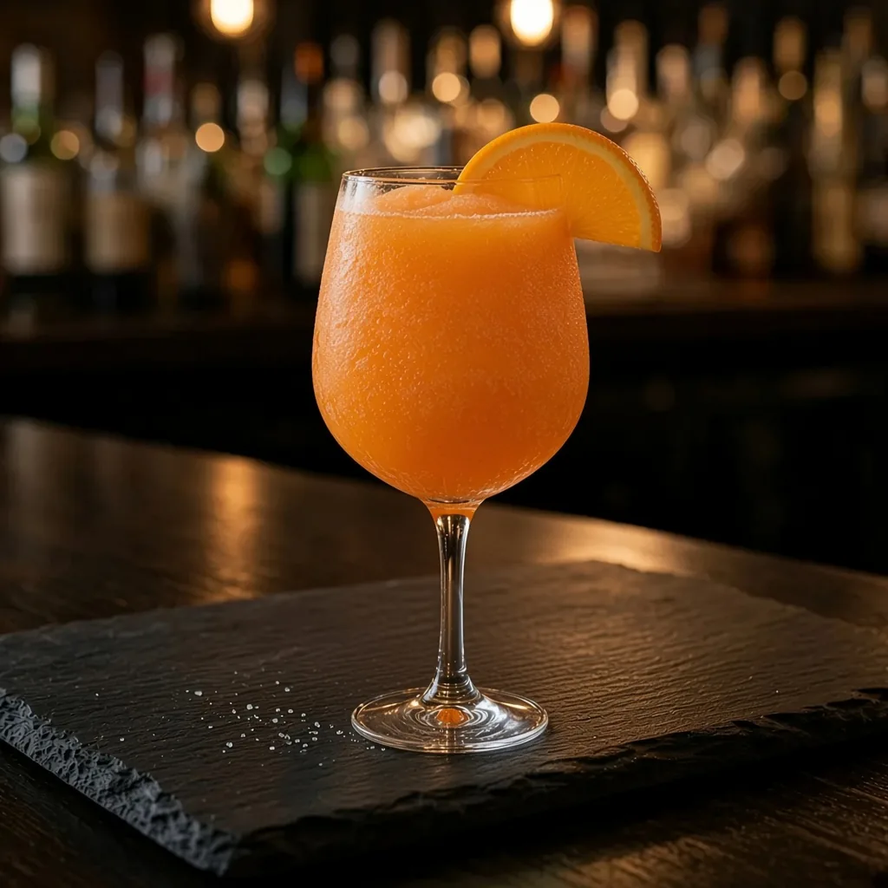
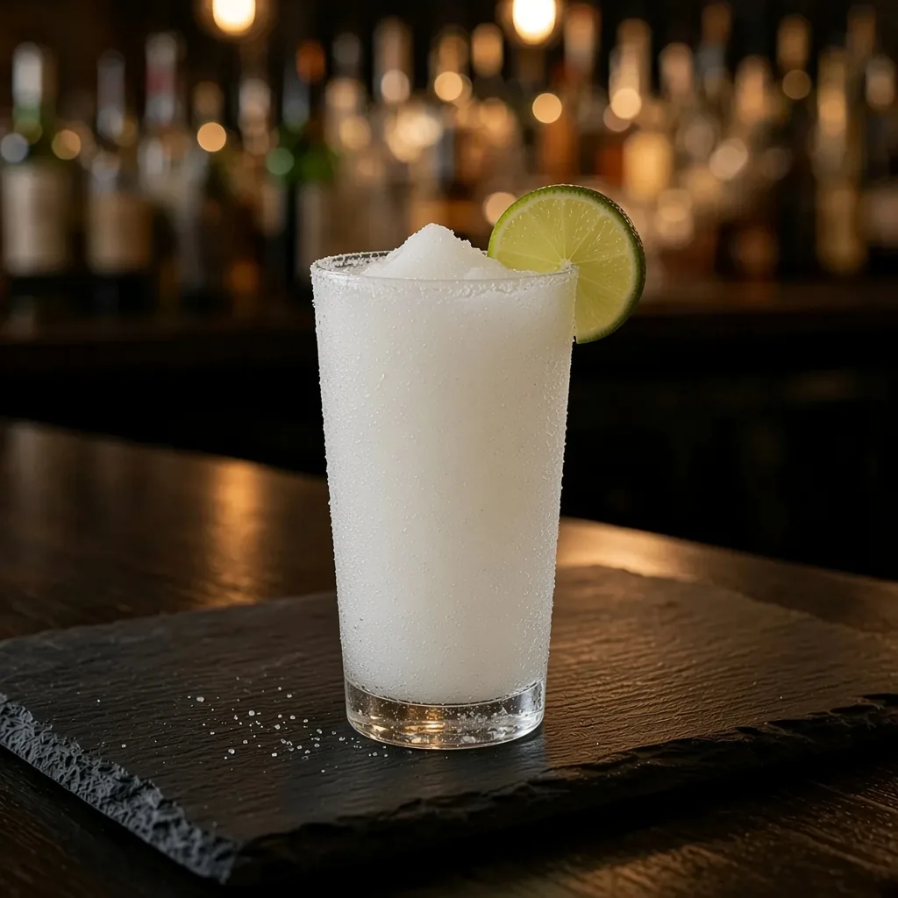

Home / Drinks / Frozen drinks
Frozen Espresso Martini
Coffee, vodka and coffee liqueur as a frozen slush. Use coffee ice cubes for the best flavour.

Home / Drinks / Frozen drinks
Coffee, vodka and coffee liqueur as a frozen slush. Use coffee ice cubes for the best flavour.
Replace the vodka and liqueur with 4 oz more cold coffee and a drop of vanilla.
Pour it, then start a room. Drinking is optional in every game.

Frozen Aperol SpritzThe orange spritz, blended with ice for a hot day. BushwackerA Caribbean chocolate-coconut milkshake with dark rum and coffee liqueur.
BushwackerA Caribbean chocolate-coconut milkshake with dark rum and coffee liqueur.
 Frozen Vodka LemonadeVodka and lemonade concentrate blended with ice. Three ingredients.
Frozen Vodka LemonadeVodka and lemonade concentrate blended with ice. Three ingredients.

Frozen Gin and TonicA G&T slush. Freezing the tonic into cubes keeps it from tasting watery.